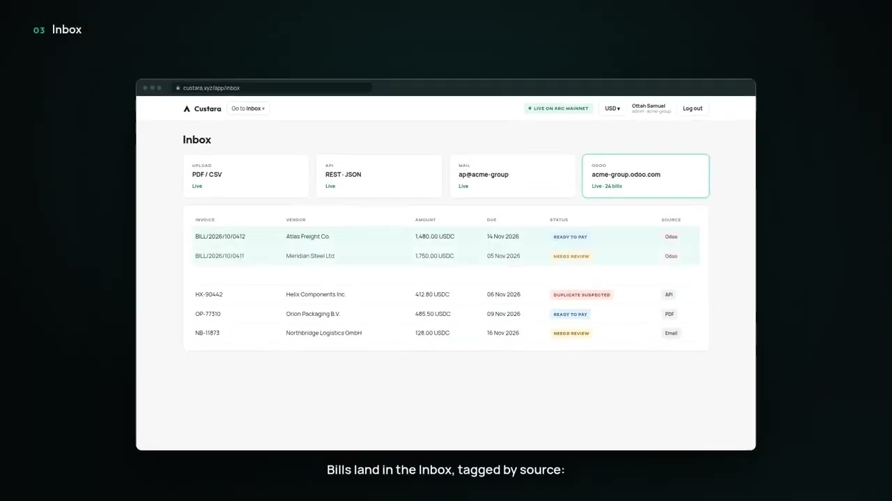
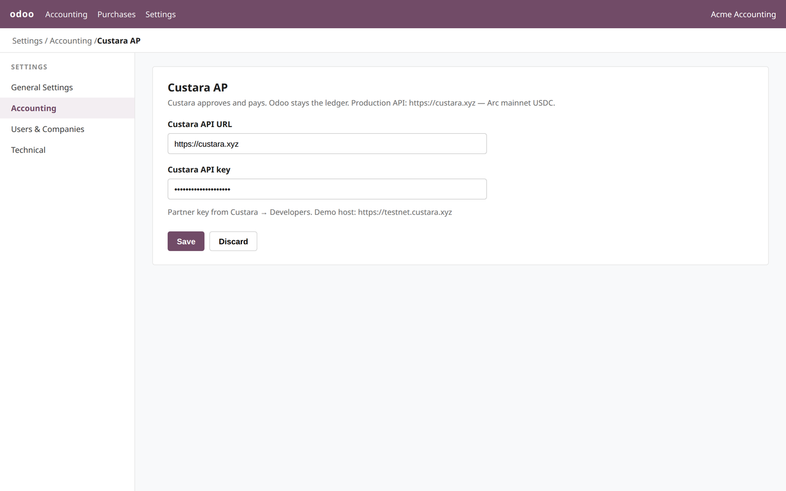
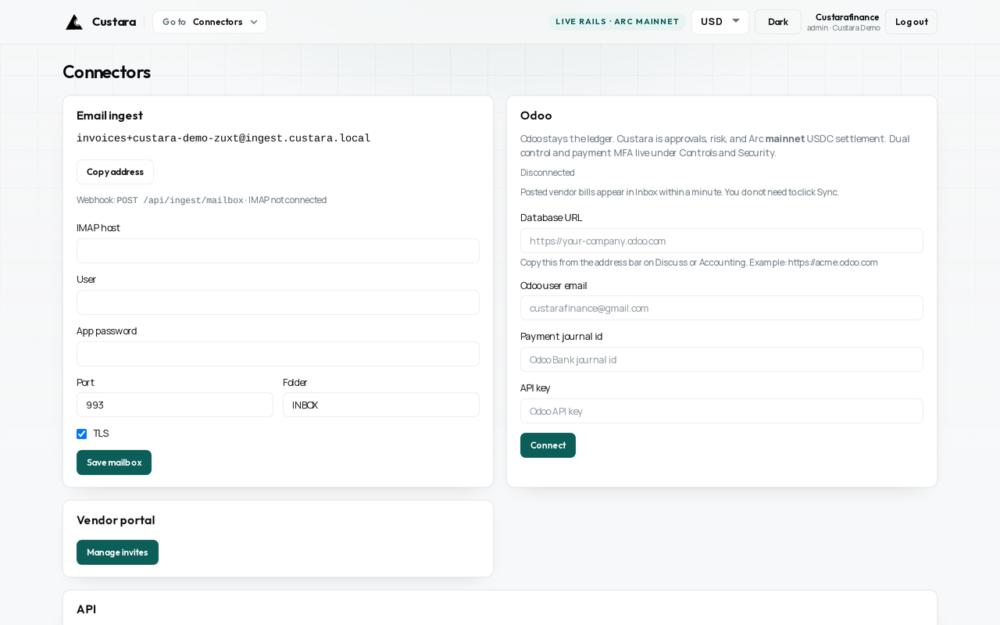
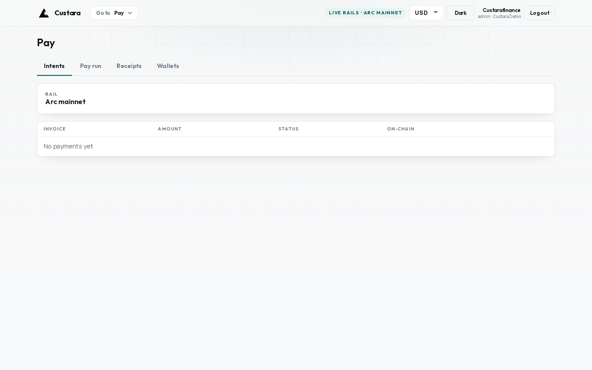

Custara
From vendor bill to authorized payment.
Odoo stays the ledger. Custara is the control plane — dual-control approvals, then Arc mainnet USDC settlement that writes back to the same bill.

Odoo integration
See the path end to end
Connect Odoo, send a vendor bill, approve in Custara, settle on Arc mainnet, and watch the same bill reconcile.
Play on YouTubeOdoo stays the ledger
Taxes, journals, and reconciliation stay in Accounting. Custara never becomes the book of record.
Approve with dual control
Policy, MFA, spend limits, and a destination allowlist sit in front of every payment.
Settle Arc mainnet USDC
Circle wallets on live rails. A failed pay does not mark the Odoo bill paid.
Sign in
Work email. One-time code.
Circle OTP on custara.xyz. No shared AP passwords.

Connect
Point Odoo at Custara — or the other way around.
Settings → Accounting → Custara AP, or Connectors in Custara. Then Send to Custara on the bill.



Controls
Fund the agent. Cap the day. Allowlist destinations.
Live rails show Arc mainnet. Daily spend starts conservative.

Pay
Write-back to the same bill.
Intents, pay run, receipts. Odoo remains the book of record.

Setup
Install, key, send.
- Install Custara AP on Odoo 18 (self-hosted or Odoo.sh).
- Settings → Accounting → Custara AP:
https://custara.xyzand a Partner API key from Developers. - Open a vendor bill → Send to Custara, or post the bill and wait for sync.
- Approve and pay in Custara. The payment writes back onto that bill.
Odoo Online can skip the module and use Custara → Connectors. Demos only: testnet.custara.xyz